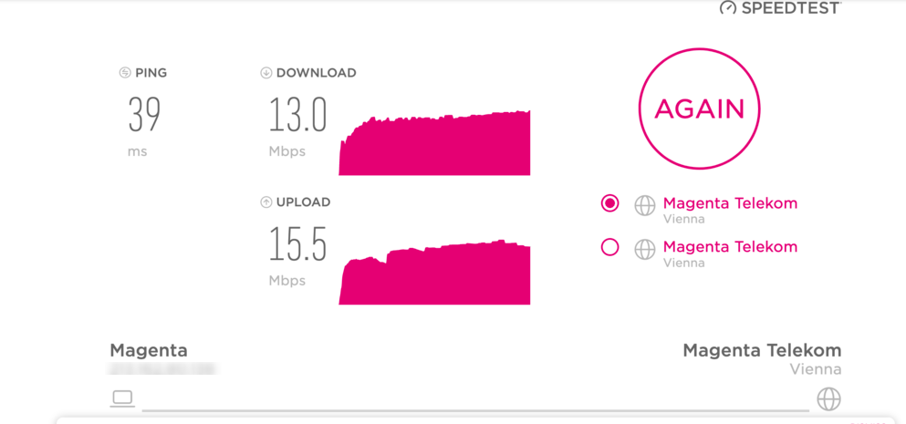
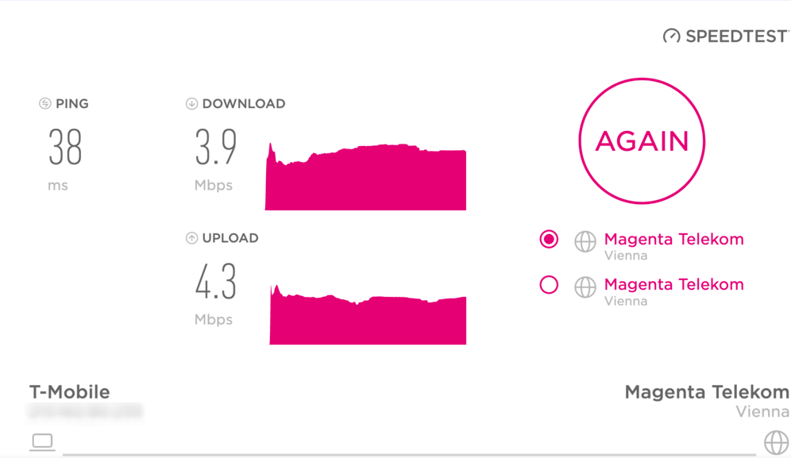

Habe den Tarif My HomeNet LTE Extreme (150Mbit 30Mbit) i und frage mich wie das sein kann.
Vor ca 6 Monaten hatte ich noch ständig 30-60 Mbit/s und verstehe nicht was sich geändert hat...
Was könnte ich da am besten machen?
hat alles keine Veränderung bewirkt.
Infos zum Setup bei der durchführung der 2 Beispieltests (1 monat abstand)
Sonst fällt mir nichts mehr ein. 

Bearbeitet von Mia_
Hi, wirf dazu am besten mal einen Blick in unsere Erste Hilfe FAQs - eventuell wirst du hier fündig.
Da die Geschwindigkeit allerdings von vielen Faktoren abhängt, empfehle ich dir die direkte Kontaktaufnahme mit unserem technischen Support .
Sie können die Versorgungslage in deiner Umgebung überprüfen und helfen dir gerne weiter.
Mia_